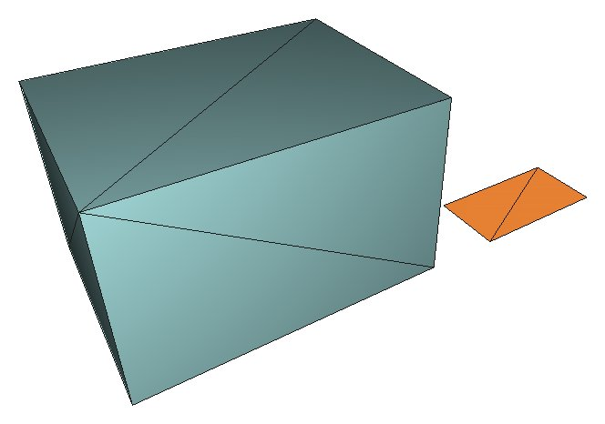
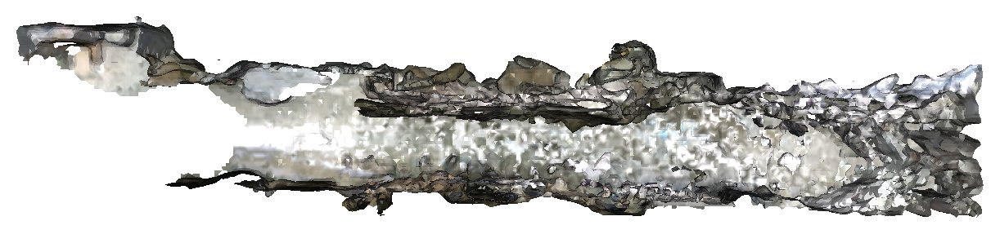

Open your Week 4 project and get the scanner's mesh
No new project this week. Your Week 4 facility-scan folder already has open3d and the class data, so we carry on in it. Move into the project folder:
cd facility-scanActivate the virtual environment:
.venv\Scripts\activate.bat.venv\Scripts\Activate.ps1source .venv/bin/activateCreate the project and add the libraries, then download the class data into it as in Week 4, step 5.
uv init --python 3.12 --no-package facility-scan
cd facility-scan
uv add numpy pandas matplotlib open3dBesides the point clouds, the robot's camera software also delivered a ready-made mesh: the corridor as triangles, with the camera photos painted on (a texture). This week's question: can a facility manager measure the building straight from it? Download it inside the project folder:
curl -L -o scanner_mesh.zip https://mugojames254.github.io/smart_facility_coursework/scanner_mesh.zip
tar -xf scanner_mesh.zipcurl.exe -L -o scanner_mesh.zip https://mugojames254.github.io/smart_facility_coursework/scanner_mesh.zip
tar -xf scanner_mesh.zipcurl -L -o scanner_mesh.zip https://mugojames254.github.io/smart_facility_coursework/scanner_mesh.zip
unzip scanner_mesh.zipCommands not working? Click Download scanner mesh at the top of this page and unzip it into your project folder. Three files are added to data:
| scanner_mesh.obj | The mesh itself (a text file): vertices, triangles, and for every triangle corner which spot of the photo it uses (texture coordinates). |
| scanner_mesh.mtl | The material file: "paint this mesh with scanner_mesh.jpg". |
| scanner_mesh.jpg | The texture image: 73 camera photos packed into one picture. |
python -c "import open3d as o3d; print(o3d.io.read_triangle_mesh('data/scanner_mesh.obj'))"It should print TriangleMesh with 50081 points and 42655 triangles. The three files must stay together in the same folder.
What is a mesh?
A point cloud is only points. The space between them is empty, so it can't answer "what is the area of this wall?". A mesh stores points (vertices) plus which three points form each triangle. The triangles make a surface, so we can compute area, volume and "how far is the wall from here?".
| vertices | Corner positions (an N × 3 array: x, y, z). |
| triangles | Three vertex numbers per triangle (an M × 3 array). Numbers, not positions. |
| normals | Which way each triangle (or vertex) faces. A floor faces up, a wall faces sideways. |
Let's build a tiny mesh by hand. Create a new file mesh_basics.py:
import numpy as np
import open3d as o3d
# 1. A mesh made by hand: a 2 m x 1 m floor tile = 4 corners + 2 triangles
vertices = np.array([
[0, 0, 0], # 0
[2, 0, 0], # 1
[2, 1, 0], # 2
[0, 1, 0], # 3
], dtype=float)
triangles = np.array([
[0, 1, 2], # first triangle uses corners 0, 1, 2
[0, 2, 3], # second triangle uses corners 0, 2, 3
])
tile = o3d.geometry.TriangleMesh(
o3d.utility.Vector3dVector(vertices),
o3d.utility.Vector3iVector(triangles),
)
print(tile)
print(f"Tile area : {tile.get_surface_area():.2f} m²")
# 2. A ready-made mesh: a 4 m x 3 m x 2.5 m room (a box)
room = o3d.geometry.TriangleMesh.create_box(width=4, height=3, depth=2.5)
print(room)
print(f"Room surface : {room.get_surface_area():.2f} m²")
print(f"Watertight? : {room.is_watertight()}")
print(f"Room volume : {room.get_volume():.2f} m³")
# 3. Show both. Press W in the window to see the triangles (wireframe)
room.compute_vertex_normals()
room.paint_uniform_color([0.6, 0.8, 0.8])
tile.paint_uniform_color([0.9, 0.5, 0.2])
tile.translate([5, 0, 0])
o3d.visualization.draw_geometries([room, tile], window_name="Mesh basics",
mesh_show_wireframe=True, mesh_show_back_face=True)python mesh_basics.pyTriangleMesh with 4 points and 2 triangles.
Tile area : 2.00 m²
TriangleMesh with 8 points and 12 triangles.
Room surface : 59.00 m²
Watertight? : True
Room volume : 30.00 m³
6 box faces × 2 triangles = 12. Surface = 2×(4×3 + 4×2.5 + 3×2.5) = 59 m². A mesh that is fully closed, with no holes, is watertight; only those have a volume: 4 × 3 × 2.5 = 30 m³.
Delete the second row [0, 2, 3] from triangles and run again. What is the tile area now? What do you see in the window?
Open the scanner's mesh
Now a real mesh. Vertices and triangles work exactly as in step 2, with one extra: a texture. Every triangle corner points at a spot (u, v) in a photo, and the screen shows that piece of photo stretched over the triangle. New file open_scanner_mesh.py:
import numpy as np
import open3d as o3d
# 1. Load the mesh. True = also load the material and the texture image (.mtl + .jpg)
mesh = o3d.io.read_triangle_mesh("data/scanner_mesh.obj", True)
print(mesh)
v = np.asarray(mesh.vertices) # corner positions (N x 3)
t = np.asarray(mesh.triangles) # 3 corner numbers per triangle (M x 3)
uv = np.asarray(mesh.triangle_uvs) # one (u, v) per triangle corner (3M x 2)
print(f"Vertices : {len(v):,}")
print(f"Triangles : {len(t):,}")
print(f"Texture corners : {len(uv):,} (u, v) pairs = 3 per triangle")
print(f"Texture image : {np.asarray(mesh.textures[0]).shape} pixels")
print(f"Size (x, y, z) : {np.round(v.max(axis=0) - v.min(axis=0), 1)} m")
print(f"Total surface : {mesh.get_surface_area():.1f} m²")
# 2. The first triangle: three corner numbers -> three 3D points + three spots in the image
print("First triangle :", t[0])
print(" its corners :", np.round(v[t[0]], 2).tolist())
print(" its (u, v) :", np.round(uv[0:3], 3).tolist())
# 3. Look at it from outside, then stand inside the corridor
mesh.compute_vertex_normals()
o3d.visualization.draw_geometries([mesh], window_name="Scanner mesh — outside")
o3d.visualization.draw_geometries([mesh], window_name="Scanner mesh — inside the corridor",
lookat=[0.2, -10, 0.8], front=[0, 1, 0.15], up=[0, 0, 1], zoom=0.12)python open_scanner_mesh.pyTriangleMesh with 50081 points and 42655 triangles, and textures of size (4096, 4096)
Vertices : 50,081
Triangles : 42,655
Texture corners : 127,965 (u, v) pairs = 3 per triangle
Texture image : (4096, 4096, 3) pixels
Size (x, y, z) : [11.9 24.9 4.2] m
Total surface : 185.9 m²
First triangle : [0 1 2]
its corners : [[1.56, -1.95, -0.28], [1.55, -1.92, -0.31], [1.58, -1.96, -0.3]]
its (u, v) : [[0.116, 0.954], [0.116, 0.953], [0.116, 0.954]]| vertices | 50,081 corner positions (metres). |
| triangles | 42,655 triangles, three vertex numbers each. |
| triangle_uvs | For every triangle corner, a position on the photo (u, v), from 0 to 1: (0, 0) = bottom-left of the image, (1, 1) = top-right. |
| textures | The photo itself (4096 × 4096 pixels). |
Two windows open, one after the other (close the first to see the second): ① from outside, ② standing inside the corridor.


The True in read_triangle_mesh(path, True) means "also read the .mtl and the .jpg". Without it you get the shape only, in grey. For measuring areas and distances the shape is all we need, so from the next step on we load it without the texture.
① In the second window, move along the corridor with the mouse and press W to see the triangles. Where are most of the holes: floor, walls or ceiling? Why? (The camera sits on the robot, looking forward.) ② Delete the True and run again.
Health check: pieces and holes
Before measuring, check with numbers whether the mesh is fit to measure. We look at three things:
| watertight | Fully closed, no holes? (The box in step 2 was True.) |
| open edges | Edges used by only one triangle = the rim of a hole. The lower the share of all edges, the better. |
| pieces | How many groups of touching triangles. For one corridor, one big piece is ideal. |
New file mesh_check.py. It takes the file name from the command line, so you can check other meshes too (you will, in step 7):
import sys
import numpy as np
import open3d as o3d
# Which mesh? python mesh_check.py -> the scanner mesh
# python mesh_check.py my_mesh.ply -> any other mesh
path = sys.argv[1] if len(sys.argv) > 1 else "data/scanner_mesh.obj"
mesh = o3d.io.read_triangle_mesh(path)
mesh = o3d.geometry.TriangleMesh(mesh.vertices, mesh.triangles) # geometry only, no texture
def report(mesh, title):
t = np.asarray(mesh.triangles)
# every edge of every triangle, as a sorted pair of vertex numbers
edges = np.sort(np.vstack([t[:, [0, 1]], t[:, [1, 2]], t[:, [2, 0]]]), axis=1)
edges, uses = np.unique(edges, axis=0, return_counts=True)
open_edges = (uses == 1).sum() # used by only one triangle = the rim of a hole
piece, size, _ = mesh.cluster_connected_triangles()
size = np.asarray(size)
print(f"--- {title}")
print(f"Vertices : {len(mesh.vertices):,}")
print(f"Watertight? : {mesh.is_watertight()}")
print(f"Open edges : {open_edges:,} of {len(edges):,} ({open_edges / len(edges):.1%})")
print(f"Separate pieces : {len(size):,} (largest = {size.max() / size.sum():.0%} of the triangles)")
return np.asarray(piece), edges[uses == 1]
# 1. As it comes out of the file
report(mesh, path)
# 2. Textured files store a separate copy of a corner wherever the texture has a seam.
# Glue corners that sit at the same spot (closer than 0.1 mm) back together, then check again.
mesh.merge_close_vertices(0.0001)
piece, rim = report(mesh, "after merging duplicate corners")
# 3. Show: every piece in its own colour, hole rims in red, ceiling cut off
rng = np.random.default_rng(1)
piece_colour = rng.uniform(0.25, 0.9, (piece.max() + 1, 3))
colours = np.zeros((len(mesh.vertices), 3))
for k in range(3):
colours[np.asarray(mesh.triangles)[:, k]] = piece_colour[piece]
mesh.vertex_colors = o3d.utility.Vector3dVector(colours)
mesh.compute_vertex_normals()
low = np.asarray(mesh.vertices)[:, 2] < 1.2 # below 1.2 m
rims = o3d.geometry.LineSet(mesh.vertices, o3d.utility.Vector2iVector(rim[low[rim].all(axis=1)]))
rims.paint_uniform_color([1, 0, 0])
no_ceiling = o3d.geometry.AxisAlignedBoundingBox([-15, -30, -2], [15, 5, 1.2])
o3d.visualization.draw_geometries([mesh.crop(no_ceiling), rims],
window_name="Pieces (colours) and hole rims (red)",
mesh_show_back_face=True)python mesh_check.py--- data/scanner_mesh.obj
Vertices : 50,081
Watertight? : False
Open edges : 48,820 of 88,383 (55.2%)
Separate pieces : 8,483 (largest = 5% of the triangles)
--- after merging duplicate corners
Vertices : 28,443
Watertight? : False
Open edges : 15,905 of 71,911 (22.1%)
Separate pieces : 32 (largest = 66% of the triangles)A textured mesh file stores a separate copy of a corner wherever the photo changes (a seam). Same position, different number, so Open3D thinks the triangles on either side don't touch. Gluing corners at the same spot back together with merge_close_vertices gives the real picture: 32 pieces, the biggest holding 66 % of the triangles, and 22 % of all edges on the rim of a hole. Lesson: question even your check numbers.

Zoom in on a few red rims in the window. Is each one a real opening, like a doorway, or a place the camera didn't see? Which kind is a problem for measuring?
Measure the building ①: floor, wall and ceiling area
A cleaning company quotes per m² of floor; a painter quotes per m² of wall. Every triangle in the mesh has an area and a direction, so we only need to sort them by direction and add them up:
| area | Area of triangle ABC = ½ · |AB × AC| (half the length of the cross product of two edges). |
| floor / ceiling | Normal nearly vertical (|nz| > 0.8). Low = floor, high = ceiling. |
| wall | Everything else (faces sideways). |
New file measure_areas.py. It crops to the main corridor first, leaving out the side rooms and the stairs:
import sys
import numpy as np
import open3d as o3d
path = sys.argv[1] if len(sys.argv) > 1 else "data/scanner_mesh.obj"
mesh = o3d.io.read_triangle_mesh(path)
mesh = o3d.geometry.TriangleMesh(mesh.vertices, mesh.triangles) # geometry only, no texture
# Keep only the main corridor (a box: min corner, max corner, in metres)
corridor = o3d.geometry.AxisAlignedBoundingBox([-1.7, -18.9, -1.0], [2.9, 0.9, 3.0])
mesh = mesh.crop(corridor)
mesh.compute_triangle_normals()
v = np.asarray(mesh.vertices) # corner positions (N x 3)
t = np.asarray(mesh.triangles) # 3 corner numbers per triangle (M x 3)
n = np.asarray(mesh.triangle_normals) # which way each triangle faces (M x 3)
# 1. Area of every triangle = half the length of the cross product of two edges
a, b, c = v[t[:, 0]], v[t[:, 1]], v[t[:, 2]]
area = 0.5 * np.linalg.norm(np.cross(b - a, c - a), axis=1)
centre_z = (a[:, 2] + b[:, 2] + c[:, 2]) / 3
print(f"Mesh : {path}")
print(f"Total surface : {area.sum():6.1f} m² (Open3D: {mesh.get_surface_area():.1f} m²)")
# 2. Sort the triangles by the way they face
flat = np.abs(n[:, 2]) > 0.8 # facing (almost) straight up or down
is_floor = flat & (centre_z < 0.8) # the floor is near z = -0.5, the ceiling near z = 2
is_ceiling = flat & (centre_z >= 0.8)
is_wall = ~flat # everything else faces sideways
floor_m2 = area[is_floor].sum()
wall_m2 = area[is_wall].sum()
ceiling_m2 = area[is_ceiling].sum()
height = np.median(centre_z[is_ceiling]) - np.median(centre_z[is_floor])
print(f"Floor : {floor_m2:6.1f} m²")
print(f"Walls : {wall_m2:6.1f} m²")
print(f"Ceiling : {ceiling_m2:6.1f} m²")
print(f"Room height : {height:6.2f} m (median ceiling z - median floor z)")
# 3. A facility manager's quote: 2 coats of paint, 1 litre covers 10 m²
print(f"Wall paint : {wall_m2 * 2 / 10:6.0f} litres")
# 4. Show each class in its own colour (ceiling left out so we can look inside)
no_ceiling = o3d.geometry.AxisAlignedBoundingBox([-5, -25, -2], [5, 5, 1.2])
def part(mask, colour):
p = o3d.geometry.TriangleMesh(mesh)
p.remove_triangles_by_mask(~mask)
p.remove_unreferenced_vertices()
p.compute_vertex_normals()
p.paint_uniform_color(colour)
return p.crop(no_ceiling)
floor = part(is_floor, [0.20, 0.65, 0.35]) # green
walls = part(is_wall, [0.75, 0.75, 0.78]) # grey
ceiling = part(is_ceiling, [0.95, 0.55, 0.15]) # orange
o3d.visualization.draw_geometries([floor, walls], window_name="Floor (green) and walls (grey)",
mesh_show_back_face=True)python measure_areas.pyMesh : data/scanner_mesh.obj
Total surface : 142.0 m² (Open3D: 142.0 m²)
Floor : 46.7 m²
Walls : 70.3 m²
Ceiling : 25.0 m²
Room height : 2.52 m (median ceiling z - median floor z)
Wall paint : 14 litres
A rough check: this corridor has about 28 m of wall, about 2.5 m high → about 70 m². So 70.3 m² of wall and a 2.52 m room height look believable. But the ceiling, 25.0 m², is half the floor, 46.7 m². The ceiling sits right above the floor, so they should be about equal. The camera hardly saw the ceiling, so it is mostly holes, and a hole counts as 0 m², with no warning.
Add ceiling to the list on the last line to see the ceiling. Which parts of the corridor still have ceiling?
Measure the building ②: a virtual tape measure for corridor width
For fire escape and wheelchair access, a corridor needs a minimum clear width (for example, Korea's barrier-free standard asks for at least 1.2 m). With a mesh we can cast a ray and get the distance to the first surface it hits. We stand every 25 cm along the corridor and shoot one ray left and one right. New file measure_width.py:
import sys
import numpy as np
import matplotlib.pyplot as plt
import open3d as o3d
path = sys.argv[1] if len(sys.argv) > 1 else "data/scanner_mesh.obj"
mesh = o3d.io.read_triangle_mesh(path)
mesh = o3d.geometry.TriangleMesh(mesh.vertices, mesh.triangles) # geometry only, no texture
# 1. Put the triangles in a ray-casting scene
scene = o3d.t.geometry.RaycastingScene()
scene.add_triangles(o3d.t.geometry.TriangleMesh.from_legacy(mesh))
# 2. Stand in the corridor (x = 0.2 m, z = 0.8 m) every 25 cm along it
ys = np.arange(-13.5, -2.5, 0.25)
origins = np.column_stack([np.full_like(ys, 0.2), ys, np.full_like(ys, 0.8)])
def shoot(direction):
"""Cast one ray from every origin; return the distance to the first triangle hit."""
rays = np.hstack([origins, np.tile(direction, (len(ys), 1))]).astype(np.float32)
return scene.cast_rays(o3d.core.Tensor(rays))["t_hit"].numpy() # inf = hit nothing
left = shoot([-1, 0, 0])
right = shoot([1, 0, 0])
width = left + right
ok = np.isfinite(width) # inf = a ray escaped through a hole or a door
# 3. Report
print(f"Mesh : {path}")
print(f"Measured spots : {ok.sum()} of {len(ys)} (rays escaped at {(~ok).sum()})")
if ok.any():
i = np.argmin(np.where(ok, width, np.inf))
print(f"Median width : {np.median(width[ok]):.2f} m")
print(f"Narrowest : {width[i]:.2f} m at y = {ys[i]:.2f} m")
print(f"Spots under 1.2 m: {(width[ok] < 1.2).sum()}")
# 4. Width profile along the corridor
plt.figure(figsize=(9, 3.5))
plt.plot(ys[ok], width[ok], ".-", label="measured")
plt.plot(ys[~ok], np.zeros((~ok).sum()), "x", color="orange", label="ray escaped")
plt.axhline(1.2, color="red", ls="--", label="1.2 m minimum")
plt.xlabel("position along the corridor, y [m]")
plt.ylabel("clear width [m]")
plt.legend()
plt.tight_layout()
plt.savefig("width_profile.png", dpi=150)
print("Saved width_profile.png")
# 5. Draw the rays in 3D: red = hit a wall, orange = escaped (drawn 3 m long)
def ray_lines(direction, dist):
hit = np.isfinite(dist)
ends = origins + np.where(hit, dist, 3.0)[:, None] * direction
return ends, hit
pts, cols, segs = [], [], []
for direction, dist in (([-1, 0, 0], left), ([1, 0, 0], right)):
ends, hit = ray_lines(np.array(direction), dist)
for o, e, h in zip(origins, ends, hit):
segs.append([len(pts), len(pts) + 1])
pts += [o, e]
cols.append([1, 0, 0] if h else [1, 0.6, 0])
lines = o3d.geometry.LineSet(o3d.utility.Vector3dVector(pts), o3d.utility.Vector2iVector(segs))
lines.colors = o3d.utility.Vector3dVector(cols)
no_ceiling = o3d.geometry.AxisAlignedBoundingBox([-5, -25, -2], [5, 5, 1.2])
mesh.compute_vertex_normals()
o3d.visualization.draw_geometries([mesh.crop(no_ceiling), lines], window_name="Virtual tape measure",
mesh_show_back_face=True)
plt.show()python measure_width.pyMesh : data/scanner_mesh.obj
Measured spots : 14 of 44 (rays escaped at 30)
Median width : 2.26 m
Narrowest : 1.79 m at y = -10.25 m
Spots under 1.2 m: 0
Saved width_profile.png

If a ray hits no triangle, its distance is inf (infinity): an open doorway or a hole in the mesh. Here rays escaped at 30 of 44 spots. With this mesh you cannot show that "the whole corridor is at least 1.2 m wide": the narrowest spot may be one you couldn't measure.
Change the ray height from 0.8 to 0.0 (about 50 cm above the floor). Do fewer or more rays escape? Why?
Rebuild it yourself: a Poisson mesh
If holes are the problem, build a mesh with almost no holes yourself, from the Week 4 point cloud. Poisson reconstruction looks at the points and their normals and finds one smooth surface that separates "inside" from "outside". Good: almost no holes. Bad: it invents surface where there were no points. So it also returns a density per vertex (how many real points were nearby), and we use that to cut the invented parts away. New file rebuild_poisson.py:
import numpy as np
import open3d as o3d
# 1. Start from the colour point cloud (Week 4), keep only the corridor
pcd = o3d.io.read_point_cloud("data/facility_scan_color.ply")
corridor = o3d.geometry.AxisAlignedBoundingBox([-1.7, -18.9, -1.0], [2.9, 0.9, 3.0])
pcd = pcd.crop(corridor)
print(f"Corridor points : {len(pcd.points):,}")
# 2. Thin (one point per 8 cm cube), clean (drop floating noise), add normals
pcd = pcd.voxel_down_sample(voxel_size=0.08)
pcd, kept = pcd.remove_statistical_outlier(nb_neighbors=20, std_ratio=2.0)
pcd.estimate_normals(o3d.geometry.KDTreeSearchParamHybrid(radius=0.25, max_nn=30))
pcd.orient_normals_consistent_tangent_plane(15)
print(f"Prepared points : {len(pcd.points):,}")
# 3. Poisson: fit ONE closed, smooth surface through all the points
mesh, density = o3d.geometry.TriangleMesh.create_from_point_cloud_poisson(pcd, depth=8)
density = np.asarray(density)
print(f"Poisson mesh : {len(mesh.triangles):,} triangles")
# 4. Trim the 5 % of the surface that had the fewest real points nearby (invented surface)
mesh.remove_vertices_by_mask(density < np.quantile(density, 0.05))
mesh = mesh.crop(corridor)
print(f"After trimming : {len(mesh.triangles):,} triangles")
o3d.io.write_triangle_mesh("corridor_poisson.ply", mesh)
print("Saved corridor_poisson.ply")
no_ceiling = o3d.geometry.AxisAlignedBoundingBox([-5, -25, -2], [5, 5, 1.2])
mesh.compute_vertex_normals()
o3d.visualization.draw_geometries([mesh.crop(no_ceiling)], window_name="Your Poisson mesh",
mesh_show_back_face=True)python rebuild_poisson.pyCorridor points : 427,516
Prepared points : 140,760
Poisson mesh : 165,374 triangles
After trimming : 155,589 triangles
Saved corridor_poisson.ply| voxel_down_sample | Keep one point per 8 cm cube → faster meshing. |
| remove_statistical_outlier | Delete points unusually far from their neighbours (noise floating in the air). |
| estimate_normals | Which way the surface faces at each point. Poisson needs these. |
| depth=8 | Resolution: space split into 28 = 256 cells per side → about 8 cm. |

Now run the step 4–6 scripts again, unchanged, just giving them the new file name:
python mesh_check.py corridor_poisson.ply
python measure_areas.py corridor_poisson.ply
python measure_width.py corridor_poisson.ply--- corridor_poisson.ply (mesh_check.py, after merging)
Vertices : 77,618
Watertight? : False
Open edges : 1,157 of 233,616 (0.5%)
Separate pieces : 58 (largest = 99% of the triangles)
...
Floor : 54.5 m²
Walls : 274.7 m²
Ceiling : 66.2 m²
Room height : 2.29 m (median ceiling z - median floor z)
...
Measured spots : 42 of 44 (rays escaped at 2)
Median width : 1.78 m
Narrowest : 1.32 m at y = -8.50 mSide by side:
| Scanner mesh | Your Poisson | |
| open edges | 22.1 % | 0.5 % |
| largest piece | 66 % | 99 % |
| floor | 46.7 m² | 54.5 m² |
| walls | 70.3 m² | 274.7 m² |
| ceiling | 25.0 m² | 66.2 m² |
| room height | 2.52 m | 2.29 m |
| width spots measured | 14 / 44 | 42 / 44 |
| width median / narrowest | 2.26 / 1.79 m | 1.78 / 1.32 m |

Poisson fills every hole, so nearly every ray lands. But 274.7 m² of wall is four times the ~70 m² estimate: the sides of shelves and objects, and "ghost walls" where small errors in the robot's position (drift) recorded the same wall twice, slightly offset, all became surface. The two meshes also disagree on width (median 2.26 m vs 1.78 m). When two methods disagree, you have found a spot to check on site: take a tape measure to y = −9.5 … −7.
Ball pivoting rolls a ball over the points and joins every three points it touches at once. It uses only real points, but leaves holes where points are sparse. Add this to the end of rebuild_poisson.py, then run the three scripts on corridor_bpa.ply. Is it closer to the scanner mesh or to Poisson?
radii = o3d.utility.DoubleVector([0.12, 0.24])
bpa = o3d.geometry.TriangleMesh.create_from_point_cloud_ball_pivoting(pcd, radii)
o3d.io.write_triangle_mesh("corridor_bpa.ply", bpa)
print(f"Ball pivoting : {len(bpa.triangles):,} triangles, saved corridor_bpa.ply")